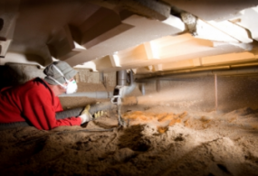

Bodemafsluiting kalkkorrels
Schotgroep heeft een bodemafsluiter die gebaseerd is op kalkkorrels. In veel vochtige kruipruimtes wordt bodemisolatie toegepast.
Vooral het vocht en de daarbij behorende kou zorgen voor veel ongemak in huis. Maar wat voor problemen kunnen er ontstaan met een vochtige kruipruimte?
Schimmel in de woonkamer, muffe lucht een koude vloer zijn allemaal gevolgen van een vochtige kruipruimte.
Vergelijk meer producten
Dakisolatie
Platdakisolatie IKO EnerthermGeluid
Binnenwandsysteem HV70 Van FaayEco-Baffles Van VRK
Geluidisolatie Isolgomma Van Imbema
Gevel
BuitenisolatiegevelHoutvezelisolatie Van Gutex
Isolatie Isovlas PL Plaat
Spouwisolatie HR++ Neopixels EPS Parels
Glas
Glasfolie van HomechillHR++ Isolatieglas
Renovatieglas en Kozijnen
Vloer
Bodem afsluiting KalkkorrelsReflectiefolie Tonzon